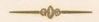
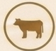

First Light Organics • Lavender Whipped Tallow Balm • 7.25″ × 1.75″ wrap label

Our family handcrafts this whipped tallow balm in small batches in Boise, Idaho. Made with 100% locally sourced, grass-fed beef tallow, nature’s richest moisturizer, packed with vitamins A, D, E and K.

Grass Fed Tallow100% Grass-Fed Beef Tallow, Organic Jojoba Oil, Organic Arrowroot Powder, Organic Lavender Essential Oil, Organic Frankincense Essential Oil
DirectionsApply a small amount to clean skin. Massage until absorbed. Use daily on face, body, and hands. Keep in a cool, dry place. Use within one year of opening.
To print: File → Print → More settings → Paper size: Custom 7.25″ × 1.75″ → Scale: 100%